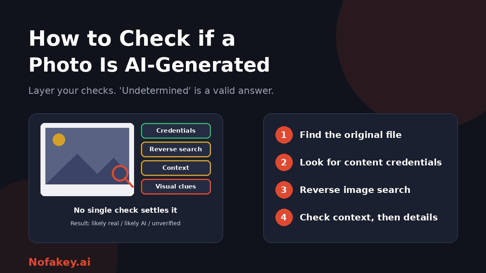

A stunning landscape, a dating profile picture, a product photo, a dramatic news shot. Any of them might be AI-generated, and these days you often cannot tell by looking. Hands used to give fakes away. Now many images have none of the old tells. A better question than "does it look fake?" is "what can I verify about where it came from?" This guide gives you a layered method anyone can follow.
Why looking harder no longer works
- Generators keep improving. Problems with hands, text and skin that once gave images away are increasingly fixed.
- Real photos can look odd. Heavy editing, filters, beauty modes and compression can create the same smoothness and strange details.
- Many images are mixed. A real photo can have an AI-made background, object or text added. The picture is partly real and partly synthetic.
- Sharing erases evidence. Screenshots and uploads often strip the hidden data that could have helped.
The main methods and what each can tell you
| Method | What it can tell you | Main limit |
|---|---|---|
| Content credentials and metadata | If valid credentials are present, they can show how the file was made or edited | Often stripped, and absence proves nothing. Metadata can also be edited |
| Reverse image search | Earlier versions, the original source, or copies labelled as AI-made | A new AI image may have no matches |
| Context checks | Whether the date, place, people and story fit, and whether others report it | Needs a little effort, but is the most reliable layer |
| Visual inspection | Odd details that can raise suspicion | Unreliable on good images, and real photos can show them too |
| AI image detectors | An estimate that the image resembles AI output | Errors in both directions, and weaker on edited, compressed or mixed images |
| Maker-specific checks | Some AI makers offer ways to check whether an image came from their own tools | Only covers that maker's images |
Step by step: how to check a photo
- Get the best version you can. Ask the sender for the original file, or find the earliest upload. Screenshots and small copies hide evidence.
- Look for content credentials. Some cameras, editing tools and AI tools attach them, and some websites and apps display them. If they are present and valid, note what they say. If they are missing, you have learned nothing.
- Run a reverse image search. Look for older versions, the first appearance, and any copies marked as AI-made. Try cropping to the main subject if full-image results are empty.
- Check context. Does the claimed place, date, weather, clothing and language fit? Is anyone reliable reporting the same event or showing the same scene from another angle?
- Check who posted it. Is the account real, with a history? Is the story consistent? A photo with no credible origin deserves caution.
- Inspect the details. Zoom in and use the clues below as hints.
- Try a detector as one more clue. See the notes below, and try more than one.
- Decide honestly. Label your conclusion as likely real, likely AI-generated, or unverified.
Visual clues to check, and how far to trust them
| Where to look | What may show up | How far to trust it |
|---|---|---|
| Hands and fingers | Extra, merged or oddly bent fingers | Low. Much improved |
| Text and signs | Garbled letters, nonsense words, inconsistent fonts | Moderate, but improving |
| Skin and faces | Waxy smoothness, uneven teeth, mismatched earrings or glasses | Low to moderate |
| Hair and edges | Strands that blend into the background or odd outlines | Moderate |
| Lighting and shadows | Light sources that disagree, missing or odd shadows and reflections | Moderate |
| Background | Repeated patterns, warped objects, buildings or crowds that do not make sense | Moderate |
| Overall "too perfect" feel | Glossy, symmetrical, dreamlike look | Low. Many real photos are heavily processed |
| Missing camera clues | No sensor noise, odd depth of field, no sign of how it was taken | Low |
A clean image with none of these can still be AI-generated. Treat visual checks as a prompt to investigate further, not as a verdict.
Partly AI, partly real
Many misleading images are not fully generated. Examples include a real product photo with an AI background, a real portrait with an AI-changed outfit, a real street scene with an added sign or object, and a real screenshot with AI-made text. These edits can slip past detectors and visual checks. The best defence is to trace the image to its original source and compare it with earlier versions.
What about AI image detectors?
- They give estimates, not facts. Treat a score as a clue.
- They can be wrong in both directions, flagging real images and passing fakes.
- They struggle with edited, resized, filtered and screenshotted images. Use the best-quality file you can.
- Different tools disagree. If they do, rely more on source and context.
- Be careful what you upload. Avoid sending private, intimate or children's photos to free tools.
- Be wary of fake detector sites and extensions. See the fake AI browser extension update scam.
For more on tools, read free online deepfake detector tools and are AI detectors accurate? For how hidden signals might help, see AI watermark detection.
Everyday situations
| Situation | What to do |
|---|---|
| A dating or social profile photo | Reverse image search it, look for the person elsewhere, and insist on safe verification before trusting. See deepfake romance scams |
| An online shop or product photo | Check whether images are reused or unrealistic, and check the shop itself. See how to check if a website is AI-generated |
| A review with photos | Look for reused or mismatched images. See fake review detection |
| A viral news or disaster photo | Look for the first source and other photos of the same event. See how journalists verify images |
| A photo a friend or relative sent | Ask where it came from, and verify any request for money through another channel |
| Art, stock or contest entries | Ask for process files and drafts, and check the platform's AI rules |
If you publish images yourself
- Label AI-generated and AI-edited images clearly. See how to label AI-generated content.
- Keep your originals and editing records, so you can prove how an image was made.
- Do not present generated images as real photographs of events or people.
- Keep any content credentials your tools add where practical.
If you still cannot tell
- Treat the photo as unverified, and say so if you discuss it.
- Do not rely on it for decisions about money, relationships or safety.
- Ask someone with expertise, such as a photographer, a newsroom verification team or a trusted friend who works with images.
- Report harmful images to the platform. If an image is intimate, involves a child, or is being used to threaten or scam someone, keep the evidence, do not forward it, and report it to the authorities.
If a link or message that came with the photo looks suspicious, paste it into our free checker for a quick first read. It is not an image detector, so use it only for the surrounding message, claim or link.
Conclusion
You usually cannot tell whether a photo is AI-generated just by looking. Layer your checks: original file, content credentials, reverse image search, context, then visual details, with detectors as one more clue. Remember that photos can be partly AI, that missing credentials prove nothing, and that "unverified" is a good answer. Find more guides on the Nofakey.ai blog.
Frequently asked questions
Can you tell if a photo is AI-generated by looking at it?
Often not anymore. Clues such as odd hands, garbled text or unnatural textures can appear, but good images may show none. Combine visual checks with source, context and credential checks.
What are content credentials?
Content credentials are information attached to a file that records how it was made or edited. If present and valid, they are a strong signal. If missing, you learn nothing, because they are often stripped when images are shared or screenshotted.
Does reverse image search show if a photo is AI-generated?
Not directly. It can reveal earlier versions, the original source, or copies labelled as AI-made. A brand-new AI image may have no matches, so no results does not prove it is real.
Can a photo be partly AI-generated?
Yes. A real photo can have an AI-generated background, object or text added. Detectors and visual checks can miss these edits, so verifying the original source matters.
What if I cannot tell whether a photo is real?
Treat it as unverified. Do not share it as fact or make decisions such as sending money based on it, and look for independent confirmation.
Got a suspicious link, offer or message to check?
Run it through the checker